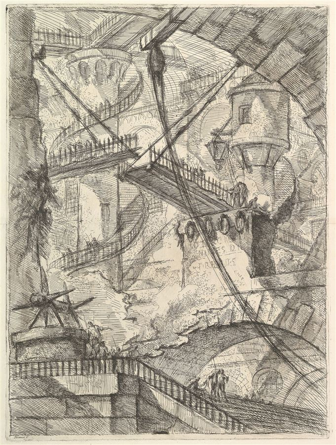

Cogito?Giovanni Battista Piranesi, The Drawbridge, from Carceri d’invenzione, c. 1750
Whether a theory’s unseen posits are earned by its predictions: gravity, a mango tree, Meillassoux, hegemony and the invisible god, and a review of two research reports — nine questions and their answers
Gravity is not a generalization of mass and distance but a posit that coordinates them. Prediction alone cannot certify such a posit, since a trained network predicts as well without one; and why any structure keeps holding in the next case remains an open question at every level, in physics, in biology and in society.
The conversation starts from the essay Getting It Right Without a Hidden World. It audits the essay, returns to the question the project began from, tests it on a family’s mango trees, separates two senses of “not necessary” to locate Meillassoux, carries the anatomy into the social sciences, and ends with a research prompt, a review of the two reports it produced, and a plain summary of them.
Charith’s questions are given as he wrote them, with grammar and spelling corrected and nothing else changed. Claude’s answers are reproduced as given in the conversation. Files attached to a question are named under it.
The nine exchanges in order, each with where it landed. The gold link is where the maintainer idea first appears; the dashed link is where its flaw was found.
The conversation opens with an audit of the essay Getting It Right Without a Hidden World, then goes back to the question the whole project began from: how a posit like gravity relates to measured quantities like mass and length, and what a posit-free predictor does to the claim that prediction tracks truth.
The opening audit of the merged essay: what holds up, and the three repairs the next draft owes.
Since the merged essay is the one we built together across the sessions — out of your original gravity question, the four reports, and the rewrite that foregrounded the projectibility dilemma — a flat “yes” from me would be cheap. The honest answer is a graded audit. Here it is, plain words, no decoration.
Bottom line: I agree with the architecture, the whole destructive half, and the verdict that the projectibility instability is the real finding, not a failure — high confidence. I don’t agree that the demotion is permanent as argued, that the fork is exhaustive, or that the position has fully squared its own use of best-explanation reasoning — those are the three repairs the next draft owes.
The question the project began from, asked again: how a posit like gravity relates to measured quantities like mass and length.
Three questions in there — the anatomy itself, the verdict on the earlier answers, and the ML inference. In order.
There are two different manufacturing processes for concepts, and the theory uses both.
A mango tree in a family garden tests whether gravity is just a bigger generalization. It leads to the question of what keeps any pattern holding — and to Meillassoux.
A family’s mango trees test whether gravity is just a larger generalization — and raise what keeps any pattern holding.
You’ve spotted something real, and it’s worth saying plainly before I complicate it: yes — the mango concept is an invariant-tracker, and at the most general level it is doing the same job as gravity. Both compress a regularity and ride it into unseen cases. That’s exactly the deflationary point of the essay: theory, folk concept, trained network — all species of one genus, compressions that project. Your example is the homely version of the “regularity-tracking substrate,” and it’s a fair catch against my last answer: the generalize/posit distinction, stated baldly, makes it sound like one tracks invariants and the other doesn’t. Both track. The differences are in the engineering, and there are two that matter.
First: what kind of invariant gets tracked. The mango concept tracks a resemblance bundle — leaf shape, smell, taste, fruit form co-occurring. Its instances look alike; that’s precisely why generalization works, since generalizing is collecting look-alikes and keeping what they share. The prediction at your sister’s house is bundle-completion: given a, b, c and the smell, infer the taste. Gravity tracks something categorically different — a form, a shape in how changes hang together — and its instances share no resemblance at all. An apple dropping, the Moon orbiting, the tide rising, a comet returning: these have no common look, smell, or feel. What they share is only the mathematical shape of their accelerations. And that’s the precise reason the force can’t be reached by mango-style abstraction over masses and distances: generalization can only gather things that already resemble each other; it has no way to declare a hidden sameness among things that don’t. The posit is the move that declares it, and then the numbers either close or they don’t.
Second: what projection does. Mango projects within a kind — it carries you to more mangoes, and only ever to more mangoes. Gravity projects across kinds and redraws them. Before Newton, falling, orbiting, and tides were three separate bundles, as distinct as mango, jackfruit, and rambutan. The posit erased those boundaries and announced they were one phenomenon. Generalization preserves the kind-map it starts from; positing tears it up and draws a new one.
Now here’s the deep part, and your example does more work than you may have intended: it answers your own opening question — for the mango. Why does the mango bundle project to your sister’s tree? Not by magic. Something maintains the bundle: heredity. The tree’s genetic machinery copies leaf-shape, smell, and taste together into every offspring. A gerrymandered concept — “tastes like mango if checked before 2030, like fish after” — doesn’t project because nothing maintains it. So the projection is honest because it’s financed from below: the surface invariant borrows its stability from a deeper structure that enforces it. And notice your concept always quietly knew this. “Mango” was never just the bundle — it carried a slot: whatever it is inside these trees that makes the fruit come out this way. Generalization gave you the bundle; the kind-concept smuggled in a small posit, an IOU for a maintainer. Genetics later showed up and paid the IOU. So even your homely case has positing nested inside generalizing — which is further reason the two processes were never as separate as my clean dichotomy suggested.
Now run the same demand on gravity that you just satisfied for mango: what maintains the inverse-square form? Point to gravity’s genome. Every answer just moves the question one floor down — say “curved spacetime,” and the question becomes what maintains that geometry’s grip on matter. The mango’s debt is paid by borrowing from the floor below; for fundamental structure there is no floor below, or each new floor re-poses the question intact. The borrowing chain — fruit bundle ← heredity ← chemistry ← physics ← ??? — terminates with the debt exposed and no payer left.
That is exactly the unpaid bill from Section 8, and your example explains something the essay doesn’t: why the problem is invisible in ordinary life. Every everyday projection is debt-financed by a deeper level, so the question “why do patterns carry forward?” always has a local answer — ask about fruit, get genetics. The bill only arrives at the bottom, where the invariant has nothing beneath it. Hume’s problem was never about mangoes; it’s about the last floor. The old move was to install a hidden ground under that floor to do for physics what the genome does for fruit. The deflation removed it and put nothing in its place.
So the clean summary: same job, different species, different position in the chain. Mango sits near the top, fully financed, projection earned on credit that deeper structure repays. Gravity sits at or near the bottom, where the credit runs out. “How do these structures track invariants?” has a good answer at every level except the last one — and that one is the open wound the whole essay ends on.
Two readings of “not necessary”, and where the real link to Meillassoux lies.
Slow down on the last line, because you’ve landed on something real but it isn’t the thing you just named. You’ve actually arrived at two different “not necessary” claims and fused them, and the whole question of whether this is Meillassoux turns on keeping them apart.
The three-way you’ve set up — force, no-force, weights, all predicting the same fall — establishes descriptive multiplicity. One pattern, many encodings, none privileged. This is underdetermination, and it does real work: it shows the posits (force, geometry, weights) are not the invariant. They’re three translations of one thing — the actual worldlines, the actual accelerations. So what’s tracked is description-independent; the real thing is whatever all three latch onto, which is none of the three posit-sets. That’s the demotion of prediction made vivid. Good. But notice what kind of contingency it is: it’s contingency of the description, and it’s about us — our freedom to re-encode. It says nothing about whether the falling-pattern itself could have been otherwise.
The other claim — the one you need for Meillassoux — is ontic contingency: not that we can describe the inverse-square law three ways, but that the law itself could have been inverse-cube, or could change tomorrow for no reason. That the invariant has no necessity. The three theories don’t give you this. Newton, Einstein, and the network all agree the apple falls at g; their multiplicity is about our representations, not about whether g could become 2g overnight. Descriptive multiplicity ⇏ ontic contingency. You’ve slid from one to the other on the word “structure.”
And here’s the sharp correction, the one the essay was built to make: underdetermination, taken by itself, runs toward correlationism, not away from it. If three human-built schemes all fit the data equally, the natural reading is that the schemes are ours — constructions tuned to the same phenomena — and we can’t get behind them to the thing itself. That is the correlationist’s home ground. Meillassoux is the philosopher trying to escape correlationism. So “many theories fit the apple, therefore Meillassoux” is almost backwards: via that premise, the multiplicity feeds exactly the position he’s attacking. This is the door the essay marked “do not enter” — convergence and underdetermination are about agreement now, and they leave you inside the circle.
But your instinct fired for a reason, and the real connection is there — it just runs through last exchange’s point, not this one. We established that the invariant at the bottom has no maintainer: the mango bundle is financed by genetics, but gravity’s inverse-square form has no genome, and the borrowing chain runs out with the debt unpaid. Now say that in Meillassoux’s vocabulary: an invariant with no ground beneath it is a fact without a reason. It holds, but nothing makes it have to hold. That is his starting move — facticity, the absence of sufficient reason. And his positive thesis is to take that absence and, instead of mourning it as a gap in our knowledge, declare it the one thing we know absolutely: the laws are radically contingent, contingency itself is the only necessity, “hyper-chaos” — a time that could revise the laws for no cause at all.
So the precise relation: the deflation’s unpaid bill is Meillassoux’s discovery. Section 8 reaches the groundlessness and calls it an open wound — we can’t explain why patterns carry forward. Meillassoux reaches the same groundlessness and calls it the answer — there’s nothing to explain, because the laws genuinely have no reason and genuinely could be otherwise. Same negative finding (no necessitating ground), opposite verdict on what to do with it.
Where it strains — and this is the honest cost, not a reason to celebrate the connection: Meillassoux doesn’t stop at “no ground.” He claims we can rationally intuit that contingency as absolute, and he tries to neutralize Hume’s worry about law-change with a Cantorian argument — that we can’t even assign probabilities to the laws shifting, because the totality of possible law-sets isn’t a totality at all. That last step is the most contested thing in After Finitude; most readers think the move from transfinite set theory to real-world law-stability doesn’t go through. So the deflationary position can be a fellow-traveler on his negative claim (no hidden necessitating ground) while refusing his positive apparatus (the rational intuition, the anti-probability argument) — which is exactly how the essay already positioned itself toward him in the arche-fossil section.
Net: you haven’t gone in a circle. You’ve found the seam where the two halves of your own project actually join. But the join is groundlessness, not multiplicity — and once you see that, Meillassoux isn’t the conclusion of your ML argument. He’s the philosopher who took the exact debt your essay leaves unpaid and tried to mint it into the one coin we’re allowed to keep.
The same anatomy applied to hegemony, ideology, economic structure and religion, and the worry that in the social sciences anyone can say anything.
The same anatomy applied to people, and the four places where it breaks.
The anatomy transfers almost without modification — and then four things break, and the breaks are where all the interesting content lives.
First the transfer. Social science has its mass-like terms: prices, votes, census counts, kinship ties — built bottom-up by generalizing observables. And it has its gravity-like terms: hegemony, ideology, capital-as-relation, anomie, the unconscious, general intelligence. Nobody has ever observed hegemony. You observe consent — workers voting against their interests, media convergence, the absence of revolt where a naive interest-model predicts revolt — and “hegemony” is posited sideways as whatever fills the slot that coordinates those observations into one system. Gramsci’s hegemony is structurally Newton’s force: never seen, fixed by role, licensing projections (“if consent is manufactured here, expect these patterns in education and religion too”). Same for Freud’s unconscious, Durkheim’s social facts, Spearman’s g. The anatomy is identical.
Now the four breaks.
You can ask — but asking yields data, not the invariant. This is the asymmetry you named, and its real role is subtler than it looks. The believer’s answer to “why fight for the invisible god?” is “because He is real and commands it.” That answer doesn’t dissolve the theorist’s posit; it’s part of what the posit must explain. Social-scientific posits like ideology are introduced precisely at the point where self-reports are judged systematically partial — the agent’s stated reason and the operative cause come apart. So the social theorist carries a double explanandum physics never faces: explain the behavior and explain the agents’ own account of it. This is the field’s power and its characteristic disease at once: if every denial of ideology is read as proof of how deep the ideology runs, the posit has immunized itself. Popper aimed that charge at Marx and Freud together, and it lands because hegemony’s residuals are interpretations, while gravity’s residuals are public numbers anyone can recompute.
The invariants loop. Gravity doesn’t read Newton; light bent the same way after 1915 as before. But publish a social category — “the proletariat,” “Generation Z,” a psychiatric diagnosis — and the people classified absorb it, conform to it, or rebel against it, changing the very regularity that was tracked. You already know this machinery from Hacking. Its hardest form is Goodhart’s law: the moment a social regularity is used for control, it stops holding, because the agents re-optimize around the controller. So in social science, grue is not an exotic puzzle at the bottom of the chain — it’s the weather. Every social law carries an invisible index: holds until the regime that maintains it changes.
The financing is circular. This is the deepest break, and it answers your question about why these fields feel so different. The mango’s borrowing chain descends to a different level: fruit bundle financed by a genome, which is not itself made of fruit bundles. The social invariant’s chain loops at its own level: hegemony is maintained by institutions, enforcement, socialization — mechanisms that are themselves made of the very patterned behavior hegemony explains. And critically, the maintainers include belief in the pattern itself. Money is the purest case: a banknote’s value is an invariant financed by nothing but the shared expectation that it will be honored; hyperinflation is the maintainer failing in public. Two consequences fall out. One: the Section 8 wound doesn’t bleed here — social regularities are never at the bottom of the chain, so “what maintains it?” always has an answer, a same-level, identifiable, alterable one. Two: because belief is among the maintainers, redescription is intervention. Publishing general relativity doesn’t change how light bends; publishing ideology-critique can change how people consent. That asymmetry is the entire wager of emancipatory social theory — make the invariant visible and you’ve weakened one of its load-bearing supports. And it’s why Meillassoux’s hyper-chaos, a fantasy in physics, is roughly the normal condition of social laws: regimes of regularity really do end, sometimes simply because enough people stop believing in them — currencies, monarchies, taboos.
The ML wedge cuts here too. Recommender systems and language models predict human behavior at scale with zero posits about hegemony or the unconscious. So prediction doesn’t certify social posits any more than it certified force. The certifiers are the same as before — unification across domains, counterfactual support — plus one channel physics mostly lacks at human scale: intervention. Change the institution the posit names and see whether the regularity moves as the theory says. Psychology even has its own version of your force/no-force/weights trio: Spearman posited g, a single common cause behind the correlation of all mental tests; the mutualism models show a network of mutually reinforcing abilities with no common cause produces the identical correlation pattern. Two incompatible structures, one predictive success — the demotion of prediction, running inside psychometrics.
Which brings the god case home, because it’s posits all the way down. The believers’ god is their gravity: an unobservable that closes their moral and social system and licenses projections — cheaters will be punished, the dead are not gone, the group will hold. The theorist then runs a Ramsey move on the believers’ own practice: blank out “God” and ask what actually fills the slot in their inferential economy. Durkheim’s famous answer: the group itself — society worshipping its own cohesion through a mask. The signaling theorists’ answer: a commitment-verification device that makes defection expensive. Competing slot-fillers for the folk posit. And notice where this lands relative to your own literature-review thesis: if humans are the animal defined by a generative faculty for positing and reifying unobservables, then social science is the strange limiting case of the whole framework — invariant-trackers tracking invariant-trackers, posit-makers positing about posit-makers.
One last payoff. The deflation settles an old social-science war the same way it settled the gravity one. “Does society really exist over and above individuals?” — the holism-versus-individualism fight, Durkheim against Thatcher’s “there is no such thing as society” — is mostly the defective external question in new clothes. Keep the internal questions: which structural invariants project, which interventions move them, what maintains them. On those, “hegemony” earns or loses its keep exactly the way “force” did. The difference is only that hegemony’s maintainer is partly us — which is why, unlike a mass, the system can be argued out of its orbit.
Whether the weakness of social posits rules out gravity-like theories there.
…then social science is the strange limiting case of the whole framework — invariant-trackers tracking invariant-trackers, posit-makers positing about posit-makers.The excerpt attached to this question, from Claude’s previous answerAttached: excerpt_from_previous_claude_message.txt
The inference overshoots, and it’s worth seeing exactly where — because what you’ve discovered is a real gradient of constraint, and you’re converting it into a categorical exclusion it doesn’t support.
“Anyone can say anything” conflates two different things: what can be generated and what can survive. Anyone can say anything in physics too — every physics department has a drawer of perpetual-motion letters. The discipline of a field was never located in what can be uttered; it’s located in the filters. So the question is whether social science has filters, and the proof that it does is the graveyard. Le Bon’s “group mind” is dead. Phrenology’s faculties are dead. The unilinear ladder of nineteenth-century anthropology — savagery, barbarism, civilization — is dead. Freud’s hydraulic libido-as-literal-energy is dead. Strict homo economicus has been cut down to a special case by behavioral economics. The strong secularization thesis — religion will simply evaporate under modernity — was killed by the data. Dead posits prove working filters. The difference from physics is the speed and sharpness of the tribunal, not its existence: in physics it convenes weekly with public quantitative residuals; in social science it convenes over decades with noisy, contested ones. A slow court is still a court.
What do the filters actually consist of, given looping and no clean lab? The same certifiers as before, earned at higher cost, plus two the field built for itself:
Now consider the retreat your conclusion implies. If gravity-like posits are barred, what’s left is description — and we already know from the Craig/Hempel result what posit-free description is: an unprojectible list of correlations indexed to time and place, useless the moment the next case arrives. Worse, there is no posit-free social observation to retreat to. “Unemployment rate” presupposes a theory of labor markets; “GDP” presupposes a decision about what counts as production; “household” is a theoretical carving. The observational vocabulary of social science is already laterally fixed. So the live choice was never posits versus no posits. It’s disciplined versus undisciplined posits.
And that’s where your worry belongs — relocated, it’s correct and important. It’s not a boundary around social science; it’s a demarcation criterion within it: a social posit earns admission only if it specifies in advance what its residuals look like — what observable pattern would count against it. Durkheim’s integration passes; prosperity could have lowered suicide and didn’t, and he said so beforehand. Loose hegemony-talk often fails: when every denial confirms the thesis, the posit has stopped touching the world. Popper’s complaint was always about specific self-immunizing theories, not the enterprise. Your “anyone can say anything” is the right indictment of the failures, wrongly extended to the survivors.
One last twist, because it’s telling. The case you’re making — that social posits are weakly constrained because their objects talk back — is itself built entirely out of social-science findings: Popper on demarcation, Hacking on looping kinds, Goodhart on reactive measures. The indictment of the field is prosecuted with the field’s own verified results. That alone should tell you the verdict can’t be “no gravity-like theories here.” The honest verdict is: same anatomy, harsher terrain — slower filters, narrower invariance ranges, a mandatory clause stating which regime each law is indexed to, and a standing rule that any posit unwilling to name its own falsifiers gets shown the door. That’s not social science failing to be physics. That’s social science paying for the same epistemic goods in a currency that inflates faster.
The threads are turned into a research prompt. Two reports come back; the answers review them, and then summarize them in plain points.
The thread turned into a staged research prompt with five modules.
The prompt is built the same way as the one that produced the original essay — argument-construction with the settled base fenced off — but aimed at everything new this thread opened: the three repairs the essay owes (Module A–B), the maintainer account of projectibility as the keystone proposal with a mandatory novelty audit against Woodward, Cartwright, and Boyd (Module C), the Meillassoux connection routed through groundlessness rather than multiplicity (Module D), and the full social-science extension including your “anyone can say anything” objection converted into the demarcation-within criterion (Module E).
If you run it in pieces, do Module C first and alone — its verdict on the expressivist third option changes how every other module should read.
This is an argument-construction and adjudication task with targeted literature verification. It is not a general literature survey. The base position is already built (see below); your job is to stress-test three repairs it owes, develop one new positive proposal, adjudicate one connection to speculative realism, and extend the framework to the social and psychological sciences. For every claim you verify or refute, cite primary sources. Where the literature is genuinely silent, say so rather than padding.
The following conclusions come from a completed essay (“Getting It Right Without a Hidden World”) and are the platform, not the target:
A subsequent audit identified the open problems below. Those are the research targets.
The essay claims the demotion is permanent because it follows from one actual case. Three objections threaten this; adjudicate each.
A1. The novelty restriction. The historically serious no-miracles argument was restricted to novel (especially use-novel) predictive success — phenomena not used in constructing the theory (Worrall, Musgrave, Leplin, Psillos on use-novelty). A trained network typically interpolates within its data distribution. Research: (i) the exact formulations of the novelty requirement; (ii) whether any actual ML system has produced temporally or use-novel predictions of qualitatively new phenomena (candidates to check: AlphaFold’s transfer to unseen fold classes and ligand/mutation tasks; GNoME and materials discovery; ML weather/climate models extrapolating outside training regimes; symbolic-regression rediscoveries). Verdict required: does the reductio go through against the restricted licensing rule, or only against a crude rule no sophisticated realist held?
A2. The parasitism objection. Many physics emulators are trained on data generated or curated by the very theory they then match, making their success derivative. Research the actual training provenance of the flagship cases used in the philosophy-of-ML literature (Boge, Sullivan, and whoever they cite). Classify: theory-generated training data vs. raw observational data. State how much of the reductio survives the classification.
A3. The distributed-representation rejoinder. If the only way to compress data projectibly is to internalize the invariant structure, the network arguably has the posits non-symbolically — and the licensing rule survives in structural form. Research mechanistic-interpretability evidence for internal world-models (Othello-GPT-style probing results, physics-informed networks, emergent geometry in sequence models; updates to Boge’s how/what-opacity and Creel’s transparency taxonomy since their original papers). Verdict: does this rejoinder convert the demotion of prediction into an argument for structural realism about network internals, and is that a cost or a gain for the base position?
B1. The meta-level inference asymmetry. The essay demotes inference-to-the-best-explanation at the object level (using van Fraassen’s bad-lot objection) but runs a “modest no-miracles” IBE at the meta level (structure surviving theory change → real invariants). Find and assess principled asymmetries: Psillos’s divide et impera; Magnus and Callender on wholesale vs. retail arguments and the base-rate objection to no-miracles; Stanford’s problem of unconceived alternatives applied at the meta level (does the history of science underdetermine even the structural-survival claim?); Saatsi’s minimal/exemplar realism as a fallback. Verdict: can the modest no-miracles be run without a double standard, or must it be downgraded — and to what, exactly?
B2. The self-application problem. What is the status of the position’s own thesis, “the world has invariant structure and nothing more”? If internal, it is just science and carries no anti-metaphysical force; if external, it is the kind of claim the deflation declared defective. Research: Carnap’s own problem with the status of the principle of tolerance; Price’s handling of global expressivism’s self-application; Thomasson’s deflationary metaontology (“easy ontology”) as a possible way to state the thesis without performative inconsistency. Verdict: can the position state itself, and in which vocabulary?
The proposal to develop and test. Projectibility is level-financed: an invariant projects when, and because, a mechanism at a lower level maintains it. A fruit-kind’s property cluster projects because heredity copies the bundle into each instance; “grue”-style gerrymandered predicates fail to project because nothing maintains them. Mid-level invariants are projectible on credit, borrowing stability from below. The Humean/anti-Humean dilemma of the base essay then bites only at the fundamental level, where the borrowing chain terminates and the debt is exposed. Hume’s problem was never about fruit; it is about the bottom floor.
Research tasks:
The thread established a precise reconstruction; verify and stress it.
The framework’s posit-anatomy transfers to the human sciences (hegemony, ideology, anomie, the unconscious, general intelligence g are sideways-fixed posits coordinating observables), but four structural disanalogies emerged. Make each rigorous and test the package.
Land a unified statement: projectibility as maintenance — one account spanning fruit, physics, and societies, with Goodman’s riddle localized to the fundamental level, social invariants fully financed but reflexively unstable, and the Meillassoux connection running through groundlessness rather than multiplicity. State explicitly whether this account changes the base essay’s Section-8 standoff (e.g., by shrinking the debt’s jurisdiction to one level) or merely relocates it. End with the three strongest objections to the synthesis, each stated in its proponent’s best voice.
A modular essay of roughly 7,000–9,000 words: each module self-contained with a one-paragraph verdict at its end; a closing synthesis section; full references. Audience: philosophically literate, fluent in analytic philosophy of science, comfortable with Meillassoux and the speculative-realism debates. Tone: direct, calibrated, no hedging-by-default.
An audit of the two reports the prompt produced.
Read both. The most useful thing I can tell you up front: you uploaded two different documents, and they disagree with each other about the keystone — and the more cautious one is right. The PDF declares Module C basically solved (“the distinction is physical: green is level-financed; grue is not,” and the synthesis claims you “no longer need to solve Goodman for 99% of science”). The markdown, running the same proposal in more depth, lands on “genuine but modest… strongly supported but incomplete… does not dissolve the debt; it shrinks its jurisdiction.” That gap isn’t cosmetic. The PDF overclaims at exactly the joint the prompt told it not to (“no renaming-as-solving”), and the markdown catches itself doing it. When they conflict, trust the markdown.
Now the module-by-module audit.
Module A — the verdict is not earned, and it contradicts what we established in-thread. The PDF concludes the demotion “survives the novelty restriction” because AlphaFold, GNoME, weather emulators, and symbolic regression make use-novel predictions without posits. Three problems, in increasing severity.
First, symbolic regression is an own-goal. A system that outputs “T² ∝ a³” has produced a posit — a human-readable symbolic law. Citing it as a posit-free predictor refutes the very point it’s adduced for. If anything it supports the realist: the invariant is real enough to be rediscovered as a law.
Second, and this is the one that matters: instance-novelty is being passed off as kind-novelty. A new stable crystal or an unseen protein fold is a new instance of a known kind the system was built to handle. The novel prediction that licenses realism in the no-miracles tradition is a new type of phenomenon the theory wasn’t built for — Fresnel’s bright spot, light-bending, the W and Z. “Qualitatively new phenomena” is the report’s phrase and it’s the overclaim; predicting a protein structure with a protein-structure predictor is interpolation within the target kind, however impressive. This is the exact distinction I drew earlier and the report glides over it.
Third, A1 and A2 are a scissors the report doesn’t notice. A2 concedes theory-trained surrogates are parasitic and rescues the reductio by pointing to raw-data systems — galaxy classifiers, LHC trigger streams. But those are doing classification, not novel-kind theoretical prediction. So the clean cases are clean precisely because they aren’t doing the thing the argument is about. The cell the realist actually fears — posit-free and raw-data and novel-kind prediction — stays empty. Put A1, A2, A3 together honestly and you get my thread position, not the report’s: prediction-as-sufficient-certificate is dead, but “permanent / survives novelty” overstates it. The report did not overturn that; it overclaimed past it.
A3 is the strongest part — emergent linear world-models (Othello-GPT et al.) do convert the demotion into evidence for structural realism. But “the network’s internal representations are isomorphic to the target’s invariants” is stated flatly when probing only shows linearly decodable structure correlated with task variables — weaker than isomorphism — and Othello is a closed, discrete, rule-given toy world. The jump to physical-scale invariants is Register-3 conjecture wearing Register-2 clothes. The skill’s own rule: stress-test the analogy, name where it breaks.
Module B — honest in B1, papered-over in B2, and the two combined quietly dissolve the “realism.” B1 bites the bullet correctly: under the base-rate objection plus meta-level unconceived alternatives, the modest no-miracles inference downgrades to a pragmatic stance (Saatsi). Good. But the unflagged consequence is fatal to the position’s self-image: the base essay’s whole point of departure from van Fraassen was that it asserts real invariants rather than stopping at empirical adequacy. If B1 downgrades that assertion to “a condition of scientific practice,” the distinction from constructive empiricism evaporates, and the report never notices.
B2 then says the master thesis can state itself via Price + Thomasson — it’s “a rule of use,” not an external claim. This is renaming-as-solving, which the prompt forbade. Price’s global expressivism has its own self-application regress (is the expressivist thesis e-represented or i-represented? Price himself wrestles with this), so the problem is relocated into expressivism’s metasemantics, not dissolved. And here’s the compound effect B1 and B2 produce together: if both the meta-inference and the central thesis are merely pragmatic stances / rules of use, the position has become thoroughgoing pragmatism about its own core commitments. At that point “structural realism” may be the wrong name for it — a question the report should have asked and didn’t.
Module C — compare the two documents; flag the residual grue-misreading in both. The novelty audit is run properly in the markdown and it reaches the honest verdict: maintainer = Cartwright’s nomological machines + Boyd’s HPC + MDC mechanisms, stacked vertically and recursed; the only genuine delta is localizing Goodman to the fundamental floor. The PDF asserts the same delta but then claims to have solved the riddle for non-fundamental levels. It hasn’t, and here’s the precise reason both documents are slightly off.
Both read grue as requiring a mechanism that flips emeralds at t — the PDF talks about “synchronized physical transition,” the markdown about a “time-triggered mechanism.” That is not the riddle. “All emeralds are grue” predicts that emeralds examined after t are blue; it posits no physical change in anything. The unexamined emeralds were grue all along, and grue-things-examined-after-t are blue by definition of the predicate. So there is no disjunctive activity for any mechanism to maintain — there is only stable green-reflectance, which we are describing in two vocabularies. To say “the lattice maintains green-reflectance, not grue-reflectance” you must already be describing the mechanism’s output in green-vocabulary rather than grue-vocabulary — and that is the natural-predicate choice Goodman says you may not presuppose. From a grue/bleen starting basis, the identical lattice “maintains grue,” and “green” is the time-indexed gerrymander. The physics is symmetric; the asymmetry lives entirely in which predicate you call the homogeneous one.
The markdown’s §4.3 gets closer than anything — it asks the right question (“does the criterion presuppose naturalness?”) and gives the best available answer (Boyd: the maintaining mechanisms are identified empirically, our physics simply doesn’t contain a green-to-blue flipper). But that answer works by substantive theoretical side-taking — our best science uses green-type categories in its laws — not by a predicate-neutral criterion. It doesn’t dissolve Goodman; it takes a side using the empirical success of certain categories, which presupposes the projectibility of those categories. The markdown admits exactly this for the fundamental floor (§4.4) and then the PDF forgets it for the floors above.
Which exposes the deepest single flaw across both documents: the maintainer account answers a causal question and is mistaken for answering a modal one. “What sustains this regularity?” (efficient causation — a mechanism) is not “why will this regularity hold in the next case?” (modal/inductive — Hume and Goodman). The maintainer gives you the first. Plain-language test, which the polymath skill demands: “things stay stable because something keeps them stable” — true, and it tells you nothing about why that something keeps holding tomorrow. So the account doesn’t shrink the debt to one floor; the debt — the modal one — is present unpaid on every floor, because “what maintains the maintainer, and why will it keep maintaining?” is just Hume re-asked one level down. The markdown half-sees this (it concedes the regress only “terminates” at the bottom while granting each step is a real explanation); but a chain of genuine causal explanations doesn’t add up to a modal ground at any link. Credit where due: the markdown’s refusal to let Lange’s symmetries-as-meta-laws pay the bottom bill (Noether runs both ways; explanatory priority unsettled) is exactly right, and Loewer’s Package Deal is correctly diagnosed as naturalizing naturalness without escaping the fork.
Module D — the right gate, one genuine catch, and a slide that’s the twin of one we already caught. D1 correctly routes through facticity rather than underdetermination (obeys the prompt). The Cantor objection is a real contribution: noting that measure theory can put probability on non-totalizable spaces is a sharp blade against Meillassoux’s anti-probability argument, sharper than most of the secondary literature. But the conversion claim — “the deflation’s unpaid debt is Meillassoux’s facticity, two sides of one coin” — slides over the same gap we diagnosed when you asked whether multiplicity was Meillassoux. The deflationist’s wound is epistemic: we can’t ground projectibility. Meillassoux’s facticity is ontic: there is no ground and the laws could really be otherwise. “We can’t explain why patterns hold” is not “patterns have no ground and could change for no reason.” Bridging the two requires absolutizing facticity — the precise step whose validity is the entire dispute, and the step the deflationist has not taken. The report’s own D1 (facticity, not our epistemic limits) should have made it suspicious of identifying his facticity with our epistemic debt. Same structural error, new costume: epistemic gap ≠ ontic contingency, just as descriptive multiplicity ≠ ontic contingency.
Module E — the strongest application, with one piece of backwards rhetoric. E1’s demarcation-within (Durkheim passes by pre-specifying the both-directions prediction; loose hegemony fails by accommodating every outcome) is right and matches what we worked out. E4’s Spearman-vs-mutualism as an in-field instance of one predictive success underdetermining incompatible structures is a genuinely good catch. The vertical-anchoring move (HADD, MCI, costly signaling beneath the god-posit) ties cleanly to your own generative-positing thesis.
But E3 has it backwards. “The projectibility wound does not bleed in social science” — because social regularities are belief-maintained at the same level rather than terminating at a non-rational floor. That frames social science as easier on projectibility. It’s harder, in a different way. Belief-maintenance means the regularity is hostage to belief-change — Goodhart, performativity, currency collapse. The emancipatory wager is literally the claim that publishing the theory can destroy the invariant — that is the opposite of projectibility. And E3 wants circular financing as a feature after E2 correctly treated looping as a bug requiring fixed-point management. You can’t bank both. The honest statement: social invariants escape the fundamental-floor problem but face a worse near-term one — they can evaporate when made explicit. The wound doesn’t stop bleeding here; it bleeds faster, from a different cut.
Two cross-cutting notes. Expressivism is load-bearing where convenient and inadequate where convenient across the PDF: it states the thesis (B2), stabilizes the Meillassoux halfway house (D), is the unrebutted closing Objection 2 — yet C4 says it faces the success-residue objection. The markdown is more coherent here: it assigns expressivism the practice-side and the maintainer the world-side, a clean division of labor. But that clean division still founders on the causal-vs-modal point — if the maintainer doesn’t supply a modal ground, then practice-side-plus-causal-story leaves the modal question untouched, and the PDF ends on a Pricean objection that, if sound, dissolves its own B2 and D. On sourcing: the markdown is well-anchored (SEP, NDPR, the actual Loewer and Lange PDFs); the PDF rests its two most contested claims — Meillassoux’s Cantorian argument and the cognitive science of religion — on Reddit, LiveJournal, and Wikipedia, exactly the spots the research skill says to flag.
Bottom line. This is strong work that obeyed most of the prompt’s constraints — the steelmanned closing objections are genuinely well-voiced, B1 bites a real bullet, the Cantor/measure-theory and Spearman/mutualism catches are sharp. But it overclaims at three load-bearing joints — A1’s “survives novelty,” C/synthesis’s “solves 99% of science,” and B2’s “states itself” — and the deepest flaw runs under all of them: the maintainer account is a causal-explanatory story sold as a modal-inductive solution, so the projectibility debt isn’t shrunk to one floor, it’s quietly unpaid on every floor. Two of my thread-level diagnoses recur unfixed: instance-vs-kind novelty in A, and epistemic-gap-vs-ontic-contingency in D. The markdown Module C is the single best artifact in the set, precisely because it talks itself out of the overclaim the PDF commits.
If you want the next move: the honest repair isn’t to defend the maintainer account as a Goodman solution — it’s to reclassify it. Concede it’s a theory of causal stability (real, useful, Cartwright-plus-Boyd recursed), explicitly deny it touches projectibility, and let the modal debt sit undivided at every level exactly as Section 8 left it. That’s weaker than the report wants but it’s the version that survives its own scrutiny.
What each report says, module by module, without critique.
Here is what each document says, in plain points. No critique — just the content.
Module A — Does “permanent” survive?
Module B — Two consistency problems
Module C — The maintainer account (keystone)
Module D — Meillassoux
Module E — Social and psychological sciences
Synthesis
The one-line difference: the PDF says Module C solves projectibility for everything except the bottom floor; the markdown says it shrinks but does not solve the problem and is openly incomplete.
The questions are Charith’s, corrected for grammar and spelling only. The answers are Claude’s, as given in the conversation, and the research prompt in §07 is the file written in that answer. The two reports reviewed in §08 are not reproduced here; the review and the summary refer to them by module.